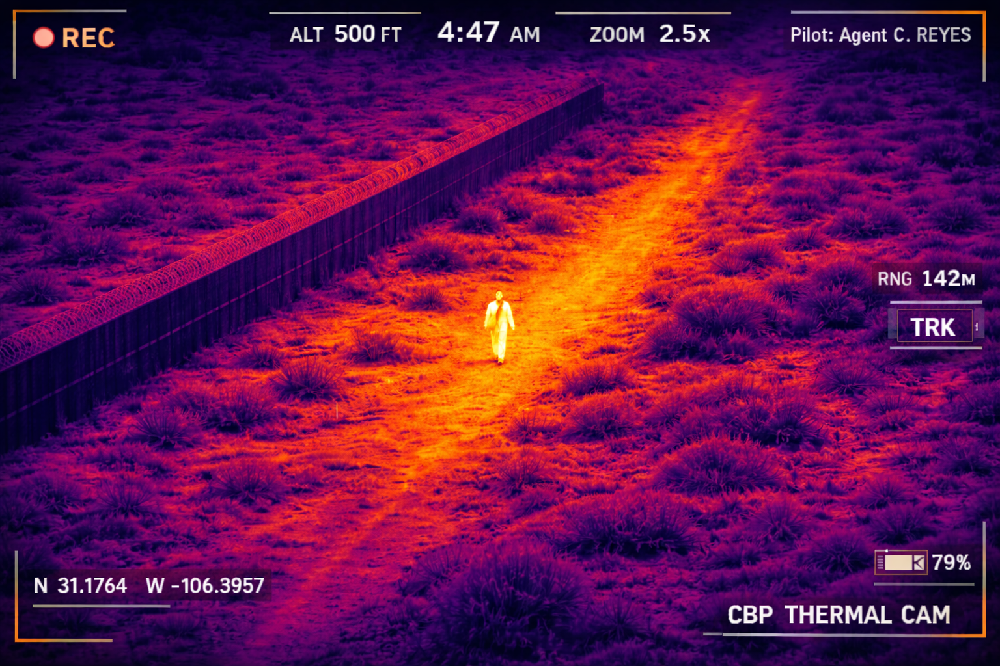

What you are about to experience. An earnest, theologically grounded work of speculative fiction asking one serious question: If the Jesus described in the Gospels — the one who walked the roads of Galilee, healed the sick, preached the Sermon on the Mount — appeared in America in 2026, what would happen? Not metaphorically. Literally. What would we do?
A note on theology. Scripture teaches that Christ will return in glory — “coming on the clouds of heaven” (Matthew 24:30), visible as lightning across the sky, triumphant and unmistakable. This story is not that. This is a thought experiment: What if we insert the Jesus of the Gospels — his words, his manner, his appearance, his radical compassion — into the ordinary machinery of the present day? Not to contradict the promise of his glorious return, but to ask an uncomfortable question about whether we would recognize what we say we’re waiting for.
What this is not. This is not an attack on Christianity, on conservatism, on liberalism, on America, or on any person or institution. It contains no hate. It assigns no fault. It promotes no political party. Its only ideology is the one Jesus himself preached in the Sermon on the Mount — which, as you will see, is radical enough to make every side uncomfortable.
Why it begins with data. Before the story, we show you what the research says about faith in America — the real numbers, the real trends. What you will find in the data is not comforting. The story that follows places those numbers in a human face.
Why it may move you. The historical record of who Jesus was — his ethnicity, his poverty, his refugee status, his teaching on wealth and the treatment of strangers — is specific and verifiable. Throughout this experience, you will see the † symbol marking claims with their evidence. When that record encounters the ordinary systems of the present moment, the collision produces questions — not accusations. No one in this story is blamed. The discomfort, if you feel it, comes from the gap between what we profess and what our systems produce. That gap belongs to all of us.
A word of grace. This experience was made with love. Not to condemn. Not to perform outrage. To grieve, and then — because grief without hope is just despair — to find the ground again. We will not leave you in the dark. We promise to catch you.
He came out of the Chihuahuan on a Tuesday in February, the kind of cold that bites without apologizing, walking the dry bed of the Rio Bravo where it had been fenced three times over. No pack. No phone. Sandals that had no business on that caliche. A robe the color of undyed wool.
He had, of course, crossed this river before. The water had been lower then. The stars had been the same.

A Border Patrol agent named Cody Reyes — twenty-six, third generation Texan, Catholic on Christmas and Easter — spotted him on the thermal drone feed at 4:47 a.m. He radioed in. Single male. No group. Walking like he’s got somewhere to be.
They brought him in easy. He didn’t run. He just looked at Cody with eyes that made Cody feel, for a reason he couldn’t name in the report, like he had been seen all the way down to the place he’d buried his brother’s memory.
He spent the night talking to the other men in adjacent cells. A Guatemalan bricklayer named Miguel who was trying to reach his daughter in Houston. A Congolese pastor named Emmanuel who had been waiting fourteen months for his asylum hearing. He listened to them the way no one had listened to them in years — which is to say: entirely. Like they were the only thing in the universe worth hearing.
By morning, Miguel was weeping and laughing at the same time, and couldn’t explain why. Emmanuel said that the man had prayed with him in a language Emmanuel didn’t recognize, and that it had nevertheless been exactly the right prayer.
◇ A door opens. ◇
A detention center staffer — twenty-two, bored, TikTok-brained — filmed through the cell window. Not maliciously. Just because something felt different about this man, the way the other detainees gathered around him like iron filings toward a magnet.
She posted it with the caption: this man radiates idk what
By noon it had six million views.
Someone ran facial recognition against Renaissance paintings. The algorithm returned a 94.7% match to the Pantokrator mosaic from the Hagia Sophia.
Twitter became an eschatological thunderdome. Each side so certain. Each side so wrong about why.
On Fox, they ran the chyron: MIGRANT CLAIMING TO BE JESUS DETAINED AT SOUTHERN BORDER. The panel agreed this was either a mental health crisis or a political stunt. They moved on to the next segment in four minutes.
On MSNBC, they called three theologians who used the segment to explain why the Second Coming would almost certainly be metaphorical. They seemed relieved by this conclusion. They, too, moved on in four minutes.
Both networks covered it. Neither network went to see him. That is a sentence worth sitting with.
Pastors across the country weighed in. Some said: “The Bible is clear — Jesus returns in glory, not like this. Test every spirit.” Others said: “This is exactly the kind of displacement narrative we should center.” Both responses had something in common: neither group went to the facility. Neither group looked at the man.
They did not go. They did not look.
That sentence contains the whole of it. Every century. Every side of every aisle. That sentence is a nail.
On day three, they transferred him. A guard named Patricia Huerta was driving the transport van with a migraine so severe she’d taken four Excedrin and they hadn’t touched it. She’d had them since her car accident in 2019. Seventeen months of neurologists and nothing.
Patricia Huerta went home that night and told her husband, who told his brother, who worked at KSAT. By the next morning there were two news vans outside the detention center and a crowd of sixty people holding signs — some that said FREE JESUS, some that said ANTICHRIST DETECTED, some that said JOHN 3:16 without apparent awareness of the irony.
They released him. No criminal record. No warrants. Deportation proceedings initiated. He was given a bus ticket to San Antonio and a phone number for a nonprofit.
He did not take the bus.
He walked to Alamo Plaza and sat on a low wall near the cenotaph and began to speak. Not loudly. Not performing. The way you speak when you have something that needs saying and you trust that the people who need to hear it will come close enough.
They did. They always do. That, too, is the oldest story.
Then he said: Love your enemy. Pray for the people who hate you. Do good to those who hunt you. If someone takes your coat, give them your shirt too. Give to anyone who asks. Don’t turn away.
The clip of Gary went viral. The left made it a punchline. The right called him a plant. Neither side heard what Gary heard. Neither side stopped long enough to ask.
They missed the point. They always miss the point. That is, perhaps, the only story there has ever been.
ICE had flagged him as a Person of Interest after the Alamo Plaza sermon — specifically, the line about giving your coat, which a DHS analyst had tagged as potentially anti-property-rights rhetoric, and the line about loving your enemy, which had been cross-referenced with undermining national security posture.
His attorney — a small Salvadoran-American woman named María José Fuentes who had been doing this work for nineteen years — asked him before they went in: “Are you afraid?”
He looked at her with that look. The one that knew the answer before the question was finished.
I have done this before.
The judge — Richard Alderman, who went to Lakewood Church on Sundays and had a framed verse from Romans above his bench — looked at the man across the courtroom. Alderman felt something he would later describe to his wife: “It was like being asked a question I didn’t know I’d spent my whole life failing to answer.”
He approved the deportation order.
Pontius Pilate also found no fault in the man. Pilate also described it as legally sound. Pilate was not evil. He was a governor doing what governors do — managing risk, following procedure, keeping the machinery of Rome running. The machinery was not cruelty. It was order. It simply did not have a category for what stood in front of it.
The judge approved the order. What would you have done?
The night before they came for him, he was in a church. Not the kind with a Jumbotron, not the kind with a bookstore in the lobby and a pastor with a Netflix deal. A small AME church on the east side of San Antonio. Mostly elderly Black women. A few young men. Cracked pews. A ceiling fan that wobbled. A piano slightly out of tune, which is the best kind.
He said: Let me serve you. That’s why I’m here.
Later, they ate together. Someone had brought tamales. He broke bread and passed it. He passed a cup. He said, very quietly: Every time you do this, remember me.
She wept so hard she couldn’t breathe. He held her. Arms that had held the dying before, and would again.
Outside, a commentator was explaining why the deportation was legally sound. “Rule of law,” he said. “Rule of law.”
They came at 5 a.m., the way they always come. Four ICE agents. Professional. Courteous, even. They were doing their jobs — the same jobs they’d do tomorrow and the day after. One had a daughter named Sophie who’d made the honor roll. One was three years from his pension. One coached Pop Warner football on Saturdays. One had a small wooden cross on his keychain that swung when he walked. None of them were villains. That is the point. That has always been the point.
He went with them without resistance.
At the airport — three hundred people who had come in the dark, who held candles and wept and sang. Not just activists. Not just immigrants. Sunday school teachers from Boerne. A retired Marine from New Braunfels who’d read the Beatitudes on his phone in the parking lot and couldn’t leave. A pediatric nurse still in scrubs. Gary, the welder, who had not slept. People who had never been to a protest in their lives, and would not have called this one.
He was loaded onto a deportation flight. Destination: undefined. The plane would circle. It always circles.
Clara said: “What do we do now?”
María José said: “What he said. We keep going.”
“But he’s gone.”
He’s been gone before. Look what happened.
Most churches did not mention the deportation that Sunday. Not out of malice. Out of the same ordinary inertia that keeps any institution on schedule. There were sermon series planned. There were budgets to review. There were lives to live. The world moves on. It always moves on. That is not a sin. It is something quieter than a sin, and perhaps harder to repent of.
The cross on the ICE agent’s keychain swung all the way home.